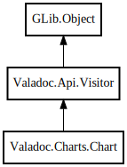

Valadoc.Charts.Chart – valadoc Reference Manual
Packages
valadoc
Valadoc
Charts
Chart
Chart
save
write
write_buffer
context
factory
graph
Chart
Object Hierarchy:

Description:
public
class
Chart
:
Visitor
All known sub-classes:
Hierarchy
Namespace:
Valadoc.Charts
Package:
valadoc
Content:
Creation methods:
public
Chart
(
Factory
factory,
Node
node)
Methods:
public
void
save
(
string
file_name,
string
file_type =
"png"
)
public
void
write
(
FileStream
file,
string
file_type)
public
uint8
[]?
write_buffer
(
string
file_type)
Fields:
protected
Context
context
protected
Factory
factory
protected
Graph
graph
Inherited Members:
All known members inherited from class Valadoc.Api.Visitor
visit_class
visit_constant
visit_delegate
visit_enum
visit_enum_value
visit_error_code
visit_error_domain
visit_field
visit_formal_parameter
visit_interface
visit_method
visit_namespace
visit_package
visit_property
visit_signal
visit_struct
visit_tree
visit_type_parameter
All known members inherited from class GLib.Object
@get
@new
@ref
@set
add_toggle_ref
add_weak_pointer
bind_property
connect
constructed
disconnect
dispose
dup_data
dup_qdata
force_floating
freeze_notify
get_class
get_data
get_property
get_qdata
get_type
getv
interface_find_property
interface_install_property
interface_list_properties
is_floating
new_valist
new_with_properties
newv
notify
notify_property
ref_count
ref_sink
remove_toggle_ref
remove_weak_pointer
replace_data
replace_qdata
set_data
set_data_full
set_property
set_qdata
set_qdata_full
set_valist
setv
steal_data
steal_qdata
thaw_notify
unref
watch_closure
weak_ref
weak_unref